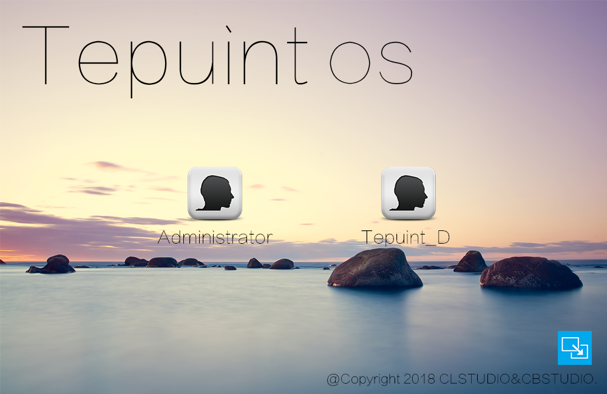

TePuintOS简介
在此，您将了解到关于TePuint的一切
简介
TePuintOS的主要开发人员有 冷漠无情夜狼、ColorOSMan，分别负责TE Shell和TE GUI
下面我们就分析一下TePuintOS的种种优点
TePuintOS的优点
一、完美的登陆界面
二、完美的登录界面，简洁、大气
漂亮的GUI
三、漂亮的GUI是TePuintOS的代表之一，只要您轻点鼠标，TePuintOS立即会响应您的操作
安全的TePuintClouds
基于命令行的云服务，您的数据在此都会受到安全的保护、实时的更新。它能够独立、自动的运作，您可以专心去干您的事情而不受干扰，并随时可以获取您的文件